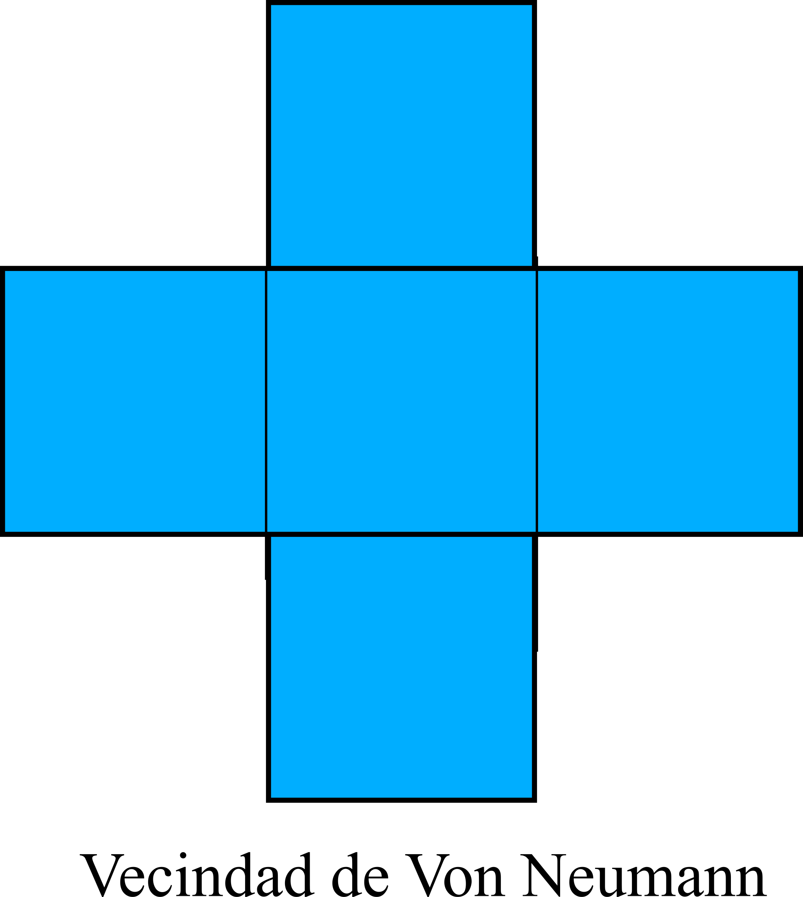
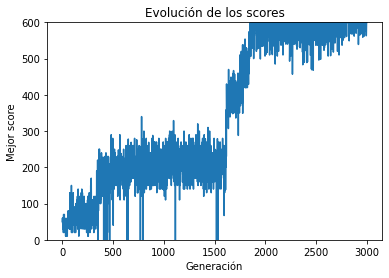

Nuestro problema consiste en un agente, el cual explorara un mundo de nxn
donde cada celda puede ser de 3 tipos:
Celda vacia
Tesoro
Pared
Las paredes se ubican en la periferia del mapa, mientras que los tesoros se
encuentran distribuidos aleatoriamente en este.
En cada una de las posiciones el agente tomará una decisión de acuerdo al
tipo de celda que haya en una vecindad de von Neumann (vease la figura)

Las decisiones que puede tomar el agente son 7:
Moverse una celda hacia arriba
Moverse una celda hacia abajo
Moverse una celda hacia la derecha
Moverse una celda hacia la izquierda
Levantar tesoro
No hacer nada
Moverse en una dirección aleatoria
Conforme transcurre la simulación las acciones del agente son evaluadas bajo
el siguiente criterio:
Si el caminante intenta levantar un tesoro donde no lo hay se le penaliza
quitandole 3 puntos.
Si el caminante choca con una pared al tomar su decisión se le resta un
punto y se le reestablece a la posición anterior.
Si el caminante recoge un tesoro en forma correcta entonces se le suman
10 puntos.
Implementación
La implementación, realizada en Python 3 resulta un tanto extensa. Es por
ello que nos limitaremos a describir los rasgos mas destacables de la misma.
Si se desea revisar el código con detalle este se puede consultar en:
www.github.com
Para resolver el problema se utilizó un algoritmo genético, el cual consta de
4 pasos:
Evaluación
Selección
Cruzamiento
Mutación
Antes de describir en que consiste cada una, es pertinente mencionar cual es
la representación del caminante en terminos computacionales.
Caminante
El caminante se implementó como un objeto, cuyo atributo principal es su
genotipo. Este genotipo es un arreglo, el cual contine las decisiones a tomar
ante los diferentes tipos de vecindario que el agente pudiese encontrar. Notese
que como en la vecindad de von Neumann examinamos 5 casillas distintas, y cada
una de ellas puede contener 3 tipos diferentes de celda, entonces el genotipo
posee \(3^{5} = 243\) entradas. Cada entrada es un número de 0 a 6 dependiendo
de la decisión que se tome.
Una de las cuestiones mas importantes que se tuvieron que resolver como parte
de la implementación fue: ¿Dada la información de los 5 vecinos del caminante.
como podemos saber a que indice del genotipo referirnos para buscar la decisión?
La información del entorno vendría dada como un arreglo de 5 entradas, las cuales
son números del 0 al 2 dependiendo del tipo de celda que se tenga. Estas 5 entradas
si lo pensamos describen un número en base 3 de 5 digitos, y el indice se obtendría
haciendo el traspaso hacia base 10, si indexamos las entradas como \(A_{i}\) entonces:
Además del caminante se implementó un objeto de tipo mapa, cuyo atributo
principal es un arreglo bi dimensional de \(n\times n\). Cada entrada del mapa
es un número \(0,1,2\) dependiendo del tipo de celda que se tenga. Otras fun
cionalidades importantes de dicho objeto son la habilidad de distribuir cierta
cantidad de tesoros aleatoriamente, retirar un tesoro etc.
Puppet Master
El objeto que realiza la simulación de un caminante y lo evalua durante el
experimento se denominó Puppet Master (Una alusión satírica a Master of Puppets,
canción que trata sobre fuerzas ominosas y desconocidas que ejercen total control
sobre los sujetos).
El método principal de esta clase es play (map, walker, steps),
el cual lleva a cabo una simulación que dura el número de pasos que establezca
el usuario como argumento de la función.
El algoritmo evolutivo
El objeto responsable de evolucionar a la población se denominó Darwin (por
claras razones). Este en primera instancia inicializa una población de caminantes
con genotipos aleatorios, para posteriormente llevar a cabo las 4 tareas que se
mencionaron a principio de esta sección. Procederemos a explicar en que consisten
estas con mas detalle:
Evaluación: Se utiliza un PuppetMaster para evaluar a cada miembro de la
población en 10 mapas distintos, cada uno con tesoros distribuidos aleatoriamente.
Los scores obtenidos en cada mapa se van sumando y al final lo que se tiene es un
un arreglo con los puntajes acumulados de los miembros de la población.
Selección: Los Scores obtenidos en el punto anterior representan una probabilidad
de selección para los miembros de la población. Esta probabilidad se puede obtener usando
la siguiente regla:
$$P_{i} = \frac{\text{Puntaje}-\text{Puntaje mínimo}}{\text{Puntaje máximo}-\text{Puntaje Mínimo}}$$
Dichas probabilidades se pueden usar como pesos con los cuales seleccionar aleatoriamente
una nueva población a partir de la original. En este caso se uso una función
predefinida en python: random.choices, la cual recibe como argumento
dichos pesos.
Cruzamiento: El primer paso del cruzamiento consistió en barajar las posiciones
de los miembros de la población. Esto con el objetivo de que al tomar elementos sucesivos
como los padres de la nueva generación se estuviesen tomando duplas aleatorimente.
Hecho esto, se fueron construyendo 2 hijos por dupla, el primer hijo tomaba el genotipo
del primer padre hasta cierto punto (el punto se estableció aleatoriamente) y a partir de ahi
se copiaba el genotipo del segundo padre. Para el segundo hijo se hacía lo inverso.
Mutación: Finalmente, como fuente de variabilidad en la población se estableció
una probabilidad de que cada miembro mutase. Para cada miembro de la población se
obtenia un número aleatorio entre 0 y 1, si ese número era menor que la probabilidad
de mutación, entonces se seleccionaban aleatoriamente 10 entradas del genotipo
y se les asignaba una decisión aleatoria.
Estas 4 tareas se repiten por un número de generaciones dado.
Resultados
En esta sección se muestran los resultados obtenidos, comenzamos
enunciando el valor de los parámetros que se utilizó para evolucionar
la población
Parámetro
Valor
Número de movimientos del caminante
1000
Tamaño del mapa
10 x 10
Tamaño de la población
200
Número de generaciones
3000
Número de mapas
10
Número de tesoros por mapa
6
En el siguiente gráfico se muestra como fue modificandose el mejor score de la
población conforme transcurrieron las generaciones:

El genotipo de la solución evolucionada es el que se incluye a continuación: